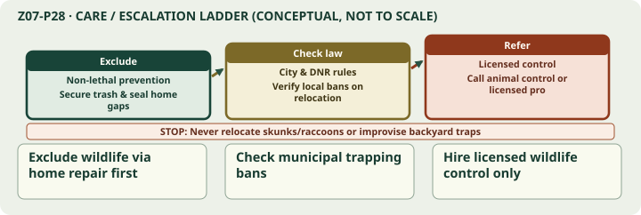

Z07-P28 · Traps and snares · New manuscript
Municipal Ordinances and Suburban Wildlife-Control Referral
Route residential and suburban nuisance-wildlife issues to municipal animal control and licensed professionals rather than improvised capture.
When it applies · Encountering raccoons, skunks, squirrels, bats, or woodchucks around homes or outbuildings.
Equipment · Local municipal animal-control contact, MN DNR licensed nuisance-wildlife list.

Actions
- Address residential wildlife conflicts first through non-lethal exclusion—securing trash lids, sealing attic/crawlspace gaps after confirming no trapped young remain inside, and removing outdoor pet food.[L05, L06]
- Check municipal ordinances before ever considering residential capture because many cities strictly prohibit traps, wildlife relocation, or release on public parks.[L01, L05]
- Refer persistent nuisance or injured suburban wildlife to local animal control or state-licensed wildlife-control operators rather than improvising capture devices or relocating disease vectors like raccoons and skunks.[L01, L05, L06]
Failure recognition · Improvising backyard traps or illegally relocating raccoons spreads rabies/distemper, separates dependent young, and violates local ordinances.[L01, L05, L06]
Verify · Home exclusion steps come first, municipal rules are checked, and licensed professionals handle unresolved wildlife conflicts.[L01, L05, L06]
Stop or change course · Stop attempting home capture of bats, skunks, raccoons, or aggressive mammals; call municipal animal control or licensed specialists.[L06, M17]
Evidence and editorial notes
- L01 · Minnesota DNR · Minnesota Trapping Regulations and Fur Harvest Rules (Current web edition)
- Section: Minnesota trapping licensing, seasons, and statutory limits · Conditions: Any regulated trapping activity or legal reference in Minnesota
Support: Trapping is strictly regulated by license, season, species, trap type, set location, check intervals, and landowner permission; unauthorized trapping is illegal.
Limitations: Emergency narratives never create an exemption to set traps or snares; verify current statute and DNR handbook every season. · Conflicting evidence: None noted.
Editorial note: Primary Z07 legal boundary. · Specialist reviewer: Wildlife law and DNR enforcement reviewer
Primary source · checked 2026-11-25 - L05 · Minnesota DNR · Nongame Wildlife Program and Protected Species (Current web edition)
- Section: Nongame wildlife protection and ecological role · Conditions: Non-harvested wildlife across forests, wetlands, and prairies
Support: Most wild mammals, songbirds, raptors, and reptiles are legally protected nongame species that may not be captured or killed.
Limitations: Ecological stewardship prioritizes observation and avoidance over capture. · Conflicting evidence: None noted.
Editorial note: Frames Z07 ecological ethics. · Specialist reviewer: Nongame wildlife biologist
Primary source · checked 2026-11-25 - L06 · Minnesota DNR · Injured, Orphaned, or Trapped Wildlife Reporting (Current web edition)
- Section: Reporting injured, orphaned, or accidentally trapped wildlife · Conditions: Discovering a trapped or injured wild animal in the field
Support: Maintain safe distance to avoid bites, rabies, and stress to the animal; note GPS/location and contact a Conservation Officer or licensed wildlife rehabilitator.
Limitations: Never attempt barehanded release of distressed carnivores, raptors, or large mammals. · Conflicting evidence: None noted.
Editorial note: Establishes Z07 incidental-capture reporting protocol. · Specialist reviewer: Wildlife rehabilitator and DNR officer
Primary source · checked 2026-11-25 - M17 · NIH / MedlinePlus · Dehydration (current web edition)
- Section: Dehydration Recognition, Oral Rehydration, and Red Flags · Conditions: Heat exertion, prolonged diarrhea, vomiting, or inadequate water intake
Support: Encourage small frequent sips of safe potable water or labeled oral rehydration solution in alert patients able to swallow; evacuate urgently for confusion, inability to keep fluids down, sunken eyes, or minimal dark urine.
Limitations: Severely dehydrated or altered patients cannot safely rehydrate by mouth alone. · Conflicting evidence: None; avoids unverified homemade salt-sugar ratio guesswork when labeled packets exist.
Editorial note: Links hydration monitoring to medical evacuation triggers. · Specialist reviewer: Wilderness medicine and internal medicine
Primary source · checked 2026-11-24
Source lineage · New manuscript (Z07 P18 authority referral) · Classification · New manuscript.